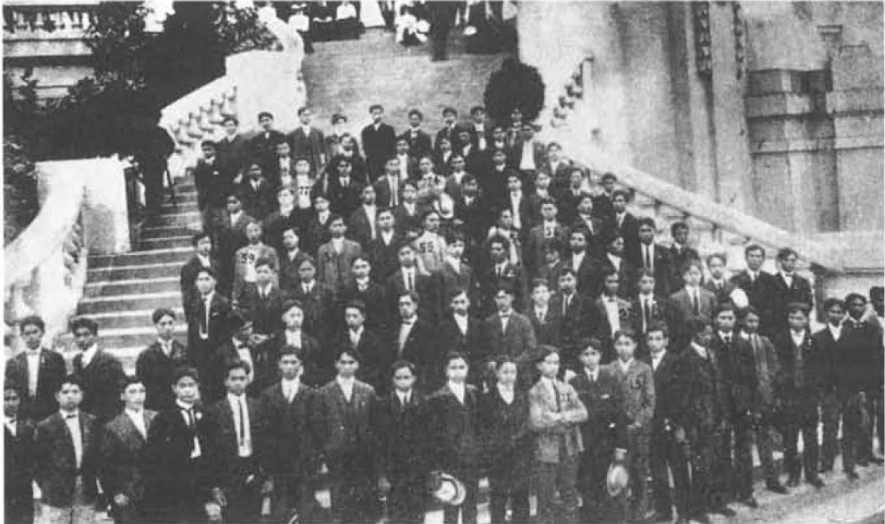

Early Filipinx Settlement: The First Students
Filipinx Student Immigrants in Ann Arbor and Detroit
Source:"Directory of Filipino Students in the United States" by the Bureau of Insular Affairs
How to read the map
The map on the left is of Ann Arbor; on the right, Detroit. Clicking on any of the place markers will provide information about the Filipinx student registered at that address, along with their declared major and school of attendance. The toggle in the right hand corner allows you to populate the map by decade.
The Pensionados (1900-1903) and Self-Supporting Student Immigrants (1910-1930s)
Arguably, the group some have considered the first wave of Filipinx immigrants involved the small population of elite students who came over in 1903. This group was called the Pensionados because they were sent to America as part of the government-sponsored pensionado program. The program's purpose was to teach these Filipinx students the ways of the U.S. Government with the expectation that they would transfer that knowledge and values upon their return to the Philippines. True to its intent, many of these students returned home to take high positions in government after graduation. The Pensionados' success also began a trend of self-supporting students who came for an education and built a life in the states.
A number of the self-supporting students that arrived during the 1910s and 20s are represented in the above maps. Little is known about their immigration and new life in the states, but the location of their living quarters points to some common trends of immigrant settlement in these cities. Most settled in low-income, underdeveloped areas. For instance, some of Detroit's Filipinx students are listed in or near the neighborhood of Cass Corridor, a historically immigrant-populated hub and eventual site of Detroit's Chinatown. Isolated locations in certain eventual city development sites also bring up questions regarding students' possible displacement. Cornelio Casaclang at 225 Bagley Ave, as one example, lived on the underdeveloped street in the early 1920s and probably up until construction for the 1926 Michigan Theater on 220 Bagley. Though these histories aren’t documented, the imaginary potential behind the piecing together of their location and place of study raise important questions about their livelihood and movement throughout documented urban change. As Virginia Woolf could hypothesize William Shakespeare’s fictitious sister in A Room of One’s Own, it’s important we too consider the potential behind these absences in American histories.
At a Glance: The First Filipinx Students

Source: Detroit Free Press
Steven Mirasol
"Detroit's Only Filipino" (1904)
Mirasol was taken to Detroit under Captain C.N. Purdy's care around 1904. Though Mirasol's location is unlisted, he provides an early record of Detroit's first Filipinx immigrants and the unique context to which immigrants were brought over. Around this time, Detroit Free Press publishes numerous articles on Fil-Ams with a focus on English-learning as sign of "civilizing" potential.

The Pre-Pensionados
Immigrant Students During the Philippine American War
Source: W.A. Sutherland’s Not by Might: The Epic of the Philippines
The Pre-Pensionados
Immigrant Students During the Philippine American War
Even before the incoming pensionados of 1903, three students were brought over in 1900. It was during the Philippine-American war that the Philippine Commission member Dean C. Worcester suggested that the elite from The International Club of Manila hold a competition to send their brightest to the U.S. for study. The three winners, Lorenzo Onrubia (11yo), Santiago Artiaga (21yo), and Juan Tecson (21yo), journeyed across the Pacific on a U.S. transport ship to their first destination, Ann Arbor. In an interview with The U. of M. Daily, one of the students expressed better feelings toward the Americans in Ann Arbor than in the Philippines, stating the Americans in their homeland were perceived more as "conquerors there than as liberators."